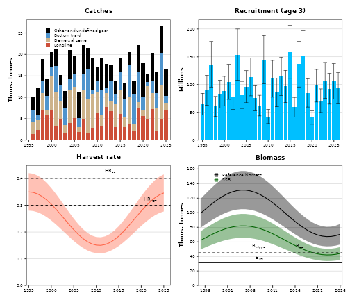
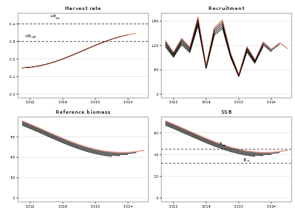
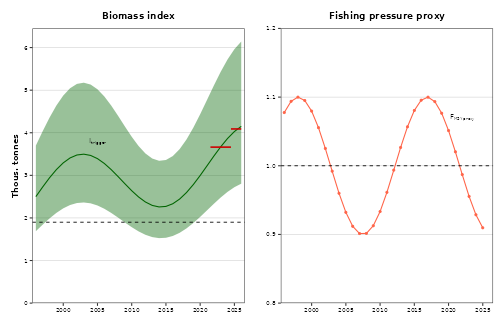

An advice sheet (advice_en.qmd,
advice_is.qmd in each stock repository) is built from a few
objects of the assessment_model pipeline:
assessment_hist, advice_hist,
tac_hist, landings_by_gear,
landings_by_fishing_year_country, and for category 3 stocks
the rule’s components (rfb_prognosis,
chr_prognosis). The hr_advice_data_*()
functions reshape them and the hr_advice_plot_*() /
hr_advice_table_*() functions draw the figures and tables.
This vignette runs them on made-up numbers for a toy stock.
English and Icelandic
Every figure and table takes its labels from
getOption("hr.lang") ("en" or
"is", through hr_label() and the
hr_locale table). Each sheet sets it from its
lang: front matter in quarto_setup.R:
Toy data
set.seed(2)
assessment_year <- 2026
# Assessment summaries of the last five assessments (biomass in tonnes,
# recruitment in thousands), as assessment_hist
rec_all <- 80000 * exp(rnorm(length(1995:assessment_year), 0, 0.3))
assessment_hist <- do.call(rbind, lapply(2022:assessment_year, function(ay) {
year <- 1995:ay
ssb <- 60000 + 20000 * sin((year - 1995) / 6) + 1000 * (ay - 2024)
hr <- ifelse(year == ay, NA, 0.25 + 0.1 * cos((year - 1995) / 5))
rec <- rec_all[seq_along(year)] * (1 + 0.03 * (ay - 2024))
out <- hr_assessment_template()[rep(1, length(year)), ]
out$year <- year
out$species <- 99L
out$assessment_year <- as.integer(ay)
out$median_SSB <- ssb
out$low_SSB <- ssb * 0.8
out$high_SSB <- ssb * 1.2
out$median_refbio <- ssb * 1.6
out$low_refbio <- ssb * 1.6 * 0.8
out$high_refbio <- ssb * 1.6 * 1.2
out$median_HR <- hr
out$low_HR <- hr * 0.8
out$high_HR <- hr * 1.2
out$median_recruitment <- rec
out$low_recruitment <- rec * 0.7
out$high_recruitment <- rec * 1.3
out$landings <- ifelse(year == ay, NA, hr * ssb * 1.6 / 1000)
out
}))
# Reference points: biomass in thousand tonnes, as config.R
ref_points <- list(
MGT_btrigger = 45, B_lim = 32, B_pa = 45,
HR_mgt = 0.3, HR_msy = 0.3, HR_pa = 0.4
)
landings_by_gear <- tidyr::expand_grid(year = 1995:2025, gear_name = c("BMT", "LLN", "DSE", "Other")) |>
dplyr::mutate(catch = runif(dplyr::n(), 1e6, 8e6)) # kgF- or HR-based stocks
hr_advice_data_assessment() turns the wide history into
one row per year, key and assessment, with English and Icelandic
labels:
data_assessment <- hr_advice_data_assessment(assessment_hist)
data_landings <- hr_advice_data_landings(landings_by_gear)
unique(data_assessment$key)
#> [1] "F" "HR" "recruitment" "refbio" "SSB"The four-panel stock development figure. In the sheets it is wrapped
in ggiraph::girafe(ggobj = ...) for the tooltips; here it
is drawn as a static plot:
hr_advice_plot_landings(data_landings, assessment_year = assessment_year, year_start = 1995) +
hr_advice_plot_recruitment(data_assessment, assessment_year, recruitment_age = 3) +
hr_advice_plot_fpl(data_assessment, assessment_year, ref_points, fishing_pressure = "HR") +
hr_advice_plot_ssb(data_assessment, assessment_year, ref_points)
hr_advice_plot_fpl(fishing_pressure = "F") draws F with
F_mgt, F_msy, F_pa. For F-based
stocks the history has no reference biomass; series without values are
left out of hr_advice_plot_ssb(), but drop old empty
refbio rows first if the scale complains
(23-ple).
The retrospective figure compares the last assessments:
hr_advice_plot_retro(data_assessment, ref_points, assessment_year, fishing_pressure = "HR")
Axes are set from the data. A stock that needs a fixed range adds a
scale to the returned plot inside suppressMessages() (a new
scale replaces the old one, with a message).
Tables
Reference points are kept in thousand tonnes for the figures;
hr_advice_ref_table() shows the biomass ones in tonnes
(biomass_multiplier = 1000). The basis table (in
config.R) gives the row labels and the basis of each
point:
ref_points_basis_table <- data.frame(
render = c("MGT B~trigger~", "HR~MGT~", "B~lim~"),
approach.en = c("Management plan", "Management plan", "Precautionary approach"),
approach.is = c("Aflaregla", "Aflaregla", "Varúðarnálgun"),
ref_point = c("MGT_btrigger", "HR_mgt", "B_lim"),
basis.en = c("B~pa~", "Management plan", "B~loss~"),
basis.is = c("B~pa~", "Aflaregla", "B~loss~")
)
hr_advice_ref_table(ref_points[c("MGT_btrigger", "HR_mgt", "B_lim")], ref_points_basis_table)Approach |
Reference point |
Value |
Basis |
|---|---|---|---|
Management plan |
MGT Btrigger |
45 000 |
Bpa |
HRMGT |
0.3 |
Management plan |
|
Precautionary approach |
Blim |
32 000 |
Bloss |
The TAC table joins advice_hist, tac_hist
and the landings by fishing year and country (kg):
advice_hist <- data.frame(
assessment_year = 2022:2026,
advice_period = paste(2022:2026, 2023:2027, sep = "/"),
advice = c(28000, 30500, 29800, 31200, 32900)
)
tac_hist <- data.frame(assessment_year = 2022:2026, ices_area = "5a", tac = advice_hist$advice)
landings_by_fishing_year_country <- data.frame(
fishing_year = rep(paste(2022:2025, 2023:2026, sep = "/"), each = 2),
country = rep(c("Iceland", "Other"), 4),
catch = c(27e6, 0.5e6, 29e6, 0.6e6, 30e6, 0.4e6, 30.5e6, 0.3e6)
)
data_tac <- hr_advice_data_tac(advice_hist, tac_hist, landings_by_fishing_year_country)
hr_advice_table_tac(data_tac, foreign_footnote = FALSE)Fishing year |
Recommended TAC |
National TAC |
Catches Iceland |
Catches other nations |
Total catch |
|---|---|---|---|---|---|
2022/2023 |
28 000 |
28 000 |
27 000 |
500 |
27 500 |
2023/2024 |
30 500 |
30 500 |
29 000 |
600 |
29 600 |
2024/2025 |
29 800 |
29 800 |
30 000 |
400 |
30 400 |
2025/2026 |
31 200 |
31 200 |
30 500 |
300 |
30 800 |
2026/2027 |
32 900 |
32 900 |
Stock-specific notes on rows go in footnotes (in
config.R, e.g. tac_table_footnotes in
02-had-targets), not in the package.
Category 3 stocks
Index-based stocks (25-wit, 13-cas,
14-mon, 24-lem, 26-meg,
27-dab, 60-norway-redfish; 04-whg
uses the chr rule) keep their indicators in the same history columns:
the biomass index as SSB, a juvenile index as
recruitment, the fishing pressure proxy LF=M /
Lmean as F. Relabel them with
labels:
index_hist <- do.call(rbind, lapply(2025:2026, function(ay) {
year <- 1996:ay
b <- 2500 + 800 * sin((year - 1996) / 4) + 30 * (year - 1996)
out <- hr_assessment_template()[rep(1, length(year)), ]
out$year <- year
out$species <- 99L
out$assessment_year <- as.integer(ay)
out$median_SSB <- b
out$low_SSB <- b * exp(-1.96 * 0.2)
out$high_SSB <- b * exp(1.96 * 0.2)
out$median_F <- ifelse(year < ay, 1 + 0.1 * cos(year / 3), NA)
out
}))
data_index <- hr_advice_data_assessment(
index_hist,
labels = list(
en = c(SSB = "Biomass index", F = "Fishing pressure proxy"),
is = c(SSB = "Lífmassavísitala", F = "Vísitala veiðihlutfalls")
)
)
ref_index <- list(I_trigger = 1900, F_msy_proxy = 1)
hr_advice_plot_index(data_index, assessment_year, ref_index, index_ab = TRUE, index_ab_span = "periods") +
hr_advice_plot_fproxy(data_index, assessment_year, ref_index, y_pad = 0.1, points = TRUE)
index_ab = TRUE draws index A (mean of the last two
years) and index B (the three years before) of the rfb rule.
The advice calculation tables take the rule’s components as a data
frame with component and value (from
dlsrules::rfb_rule() or
dlsrules::fproxy_rule(); component names in any case). The
row layout and the English and Icelandic text are in
inst/extdata/rfb_prognosis_base.csv and
chr_prognosis_base.csv:
rfb_prognosis <- data.frame(
component = c(
"previous_catch_advice", "index_A", "index_B", "index_ratio",
"mean_catch_length", "msy_proxy_length", "fpp_ratio_inv",
"last_index_value", "Itrigger", "biomass_safeguard", "multiplier",
"initial_catch_advice", "stability_clause_applied", "catch_advice",
"advice_change"
),
value = c(1200, 3350, 3100, 1.081, 41.5, 37.5, 0.904, 3400, 1900, 1, 0.95, 1114, 0, 1114, -7.2)
)
hr_advice_table_rfb(rfb_prognosis, assessment_year, biannual = TRUE)Ay: Catch advice for 2025/2026 |
1 200 |
Stock biomass trend |
|
Index A (2025-2026) |
3 350 |
Index B (2022-2024) |
3 100 |
r: Stock biomass trend (index ratio A/B) |
1.081 |
Fishing pressure proxy |
|
Mean catch length (Lmean = L2025) |
42 |
MSY proxy length (LF=M) |
38 |
f: Fishing pressure proxy (LF=M / Lmean) |
0.904 |
Biomass safeguard |
|
Last index value (I2026) |
3 400 |
Index trigger value (Itrigger = Iloss*1.4) |
1 900 |
b: Index relative to trigger value, min(I2026 / Itrigger, 1) |
1 |
Precautionary multiplier to maintain biomass above Blim with 95% probability |
|
m: Multiplier (generic multiplier based on life history) |
0.95 |
Advice calculation1) |
1 114 |
Stability clause (+20% / -30% compared to Ay, only applied if b > 1)2) |
0 |
Catch advice for 2026/2027 and 2027/2028 |
1 114 |
% advice change3) |
-7.2 |
1) Ay × r × 1/f × b × m | |
2) min{max(0.7Ay, Ay+1), 1.2Ay} | |
3) The figures in the table are rounded. Calculations were done with unrounded inputs, and compared values may not match exactly when calculated using the rounded figures in the table. | |
The same table in Icelandic:
withr::with_options(list(hr.lang = "is"), hr_advice_table_rfb(rfb_prognosis, assessment_year))Ay: Ráðgjöf fyrir 2025/2026 |
1 200 |
Breytingar í stofni |
|
Vísitala A (2025-2026) |
3 350 |
Vísitala B (2022-2024) |
3 100 |
r: Hlutfall vísitölu (A/B) |
1.081 |
Vísitala veiðihlutfalls |
|
Meðallengd í afla(Lmean = L2025) |
42 |
Lengd við kjörsókn (LF=M) |
38 |
f: Vísitala veiðihlutfalls (LF=M / Lmean) |
0.904 |
Gátmörk |
|
Vísitala seinasta árs (I2026) |
3 400 |
Aðgerðarmörk vísitölu (Itrigger = Iloss*1.4) |
1 900 |
b: Vísitala í hlutfalli við aðgerðamörk, min(I2026 / Itrigger, 1) |
1 |
Varúðarlækkun til þess að tryggja að hrygningarstofn fari ekki undir gátmörk (Blim) með 95 % líkum |
|
m: Margfaldari (byggður á lífssögu) |
0.95 |
Reiknuð ráðgjöf1) |
1 114 |
Sveiflujöfnun (+20 % / -30 % borið saman við Ay, aðeins beitt ef b > 1)2) |
0 |
Ráðgjöf fyrir 2026/2027 og 2027/2028 |
1 114 |
% breyting á ráðgjöf3) |
-7.2 |
1) Ay × r × 1/f × b × m | |
2) min{max(0.7Ay, Ay+1), 1.2Ay} | |
3) Tölur í töflu eru námundaðar. Útreikningar eru gerðir með ónámunduðum tölum og því gætu reiknuð gildi ekki stemmt | |
hr_advice_table_chr() works the same way for the
constant harvest rate rule (04-whg).
Things to know
- The banner (
hr_advice_banner()) and the text readtacandtac_last_yearfromadvice_hist/tac_hist; they must hold the published rows (seevignette("history-tables")). - Category 3 advice is often biennial:
biannual = TRUEin the rfb table, two rows inadvice_hist, and a bannernotefor the second year. - Fixed haddock values used to be built into these functions (axis limits, recruitment age, TAC footnotes, retro colours). They are arguments now; when a figure looks wrong for a stock, look for the argument before writing a stock copy of the function.